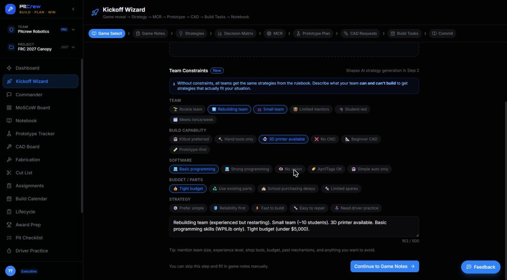
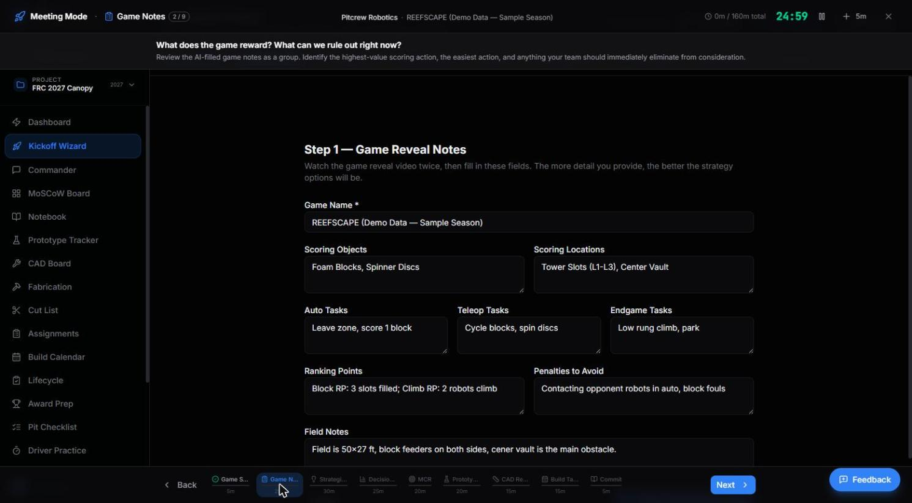
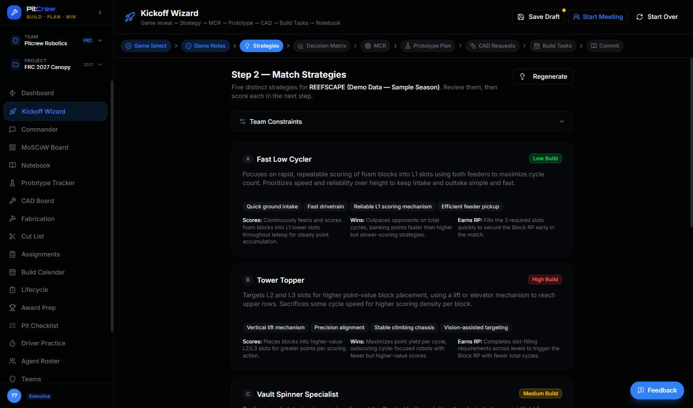
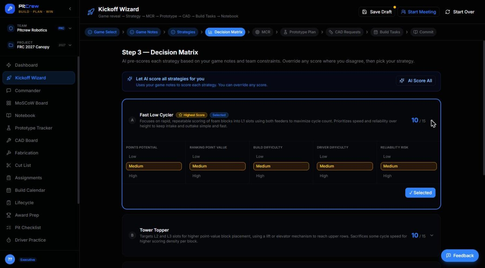
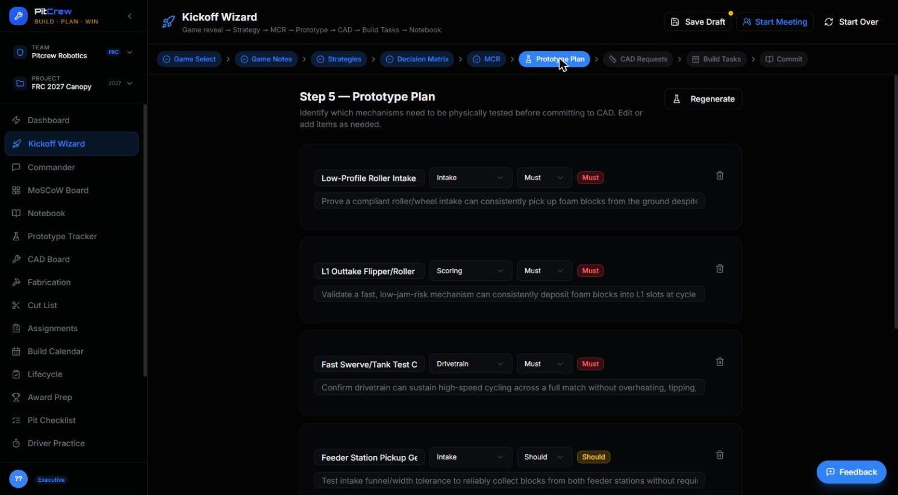
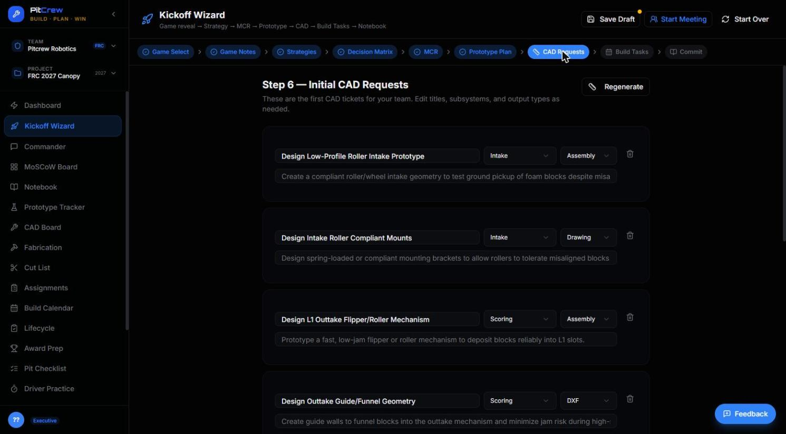
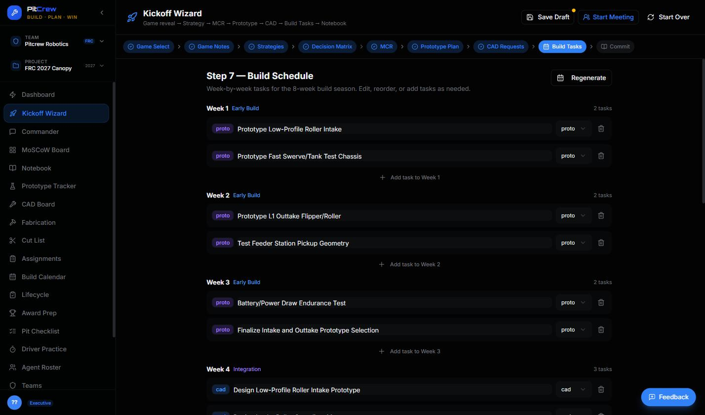

The most important tool on Kickoff Day.
Nine steps. One sitting. A game reveal turns into a documented strategy, a defined robot, and a build plan the whole team can see.
Most teams leave Kickoff Day with a pile of notes, a dozen half-formed ideas, and no shared decision. The Kickoff Wizard turns "we just watched the reveal video" into strategy choices, engineering priorities, a prototype plan, CAD requests, and build tasks — all in the same session, all feeding the tools your team uses for the rest of the season.
Strategies that actually fit your team.
Without constraints, every team gets the same generic strategies pulled from the rulebook. Tell PitCrew what your team can and can't build — team size, tools, budget, experience — and every strategy the Wizard generates is scoped to what you can realistically ship.
- Quick-select chips for team size, build capability, software, and budget
- AI writes a plain-language summary from your selections
- Feeds strategy generation directly — no re-typing later

Built to be projected, not read alone.
A full-screen facilitation view for Kickoff Day itself — game notes, strategy options, and a countdown timer, designed to run your whole team through the session together on one screen.
- Per-step time budget, visible to the whole room
- Large-format text for projectors and shared screens
- Jump to any step without losing the group's place

Five distinct strategies, not one guess.
Based on your game notes and constraints, PitCrew generates five genuinely different strategic directions — each with a build-complexity rating, the mechanisms it needs, and why it scores.
- Build-complexity badge on every option: Low / Medium / High
- Scores, Wins, and Earns RP breakdown per strategy
- Regenerate anytime as your game notes evolve

The AI scores. You decide.
Every strategy gets scored across five criteria — points potential, ranking-point value, build difficulty, driver difficulty, and reliability risk. Override anything you disagree with, then lock in your pick.
- AI pre-scores every strategy from your game notes and constraints
- Every score is editable — the AI proposes, your team decides
- "Highest Score" and "Selected" badges make the group decision visible

Define "done" before you start building.
The Minimum Competitive Robot is the simplest version of your robot that can actually score. Defining it here — before fabrication starts — is what keeps Week 6 from turning into scope creep.
- Becomes the baseline every MoSCoW "Must Have" is measured against
- Shared, written definition — not an assumption living in one mentor's head
- Carries forward into Prototype Plan and CAD Requests automatically
Screenshot pending — MCR step capture scheduled for the next asset pass.
Know what needs testing before it needs building.
Every mechanism your MCR depends on gets flagged Must or Should, tagged by subsystem, with a one-line description of what you're actually trying to prove.
- Directly feeds the Prototype Tracker — nothing re-entered
- Subsystem tags (Intake, Drivetrain, Scoring…) carry through the whole season
- Sets up Week 1–2 priorities before the team leaves Kickoff Day

The CAD queue starts full, not empty.
Initial CAD tickets are drafted straight from your MCR and prototype plan — subsystem, output type, and a real description — so your CAD team has a starting queue on day one instead of a blank board.
- Pre-filled subsystem and output type (Assembly, Drawing, DXF…)
- Editable before it ever reaches the CAD Board
- Closes the gap between "we decided this" and "someone's assigned to design it"

A week-by-week plan, generated — not guessed at.
The payoff. Your prototype and CAD priorities land on an 8-week build calendar automatically, organized into phases like Early Build and Integration, editable task by task.
- Every task pre-tagged by source: prototype, CAD, or fabrication
- Reorder, edit, or add tasks per week
- The entire season, visible on one page, before Week 1 even starts

Your next Kickoff Day doesn't have to be chaos.
Run the full nine-step session with your team, and walk away with a plan instead of a pile of notes.